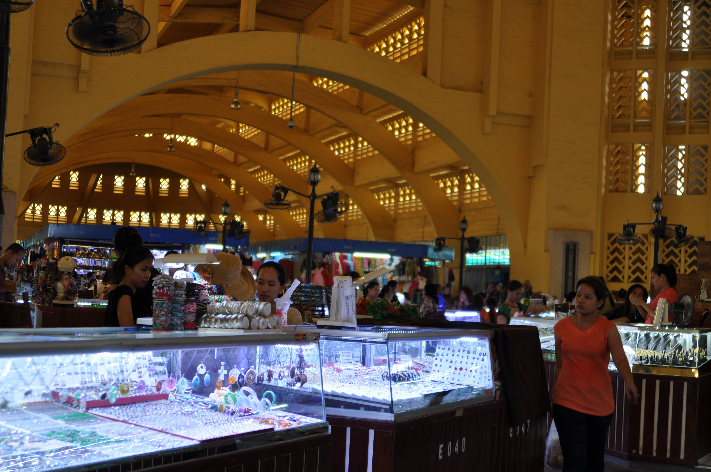
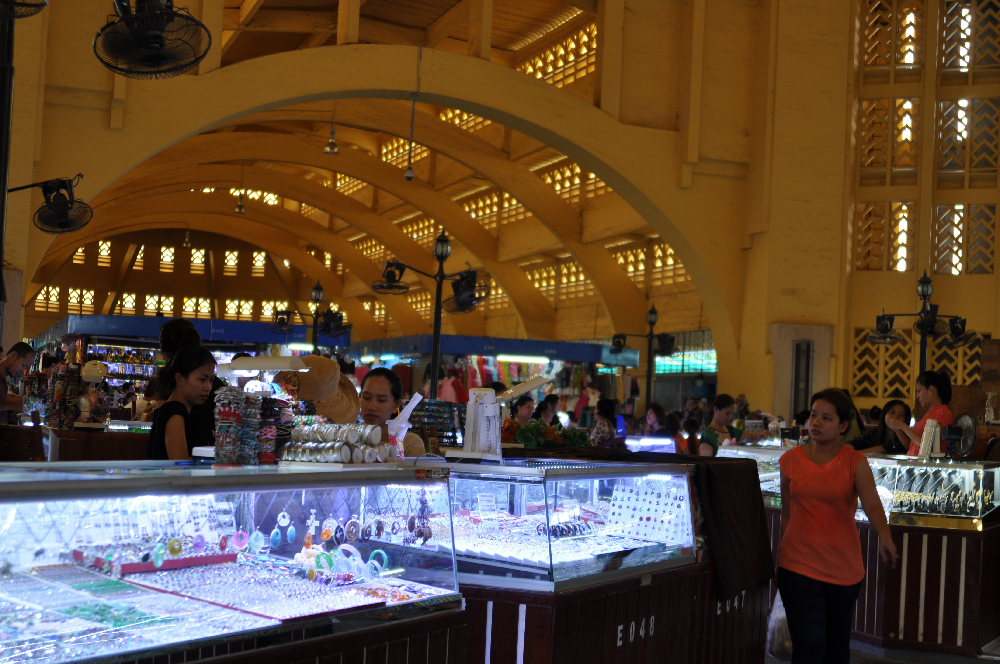

Khmer Central Market
The Central Market is a large market in the center of Phnom Penh, the capital of Cambodia. The market is housed in a large domed building that was constructed in 1937. The market is known for its unique architecture and is a popular tourist attraction. The market is a great place to shop for souvenirs, clothing, jewelry, and other items. The market is also a great place to sample local Cambodian cuisine, with many food stalls and restaurants offering a variety of dishes.
Gallery
 
